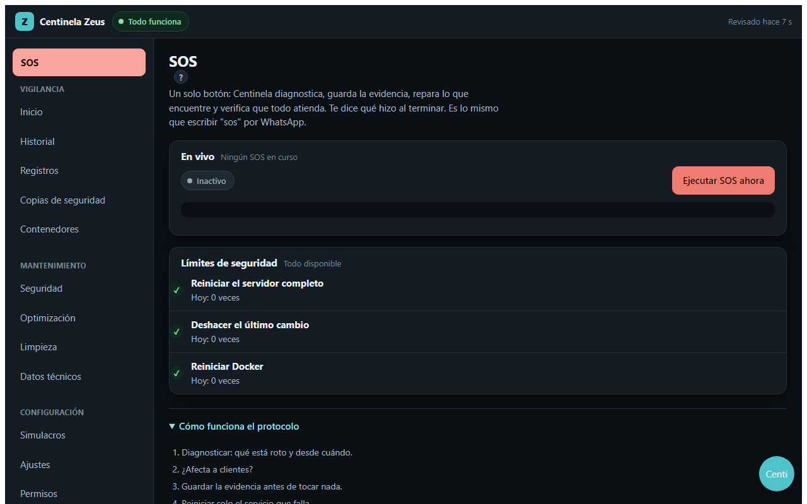
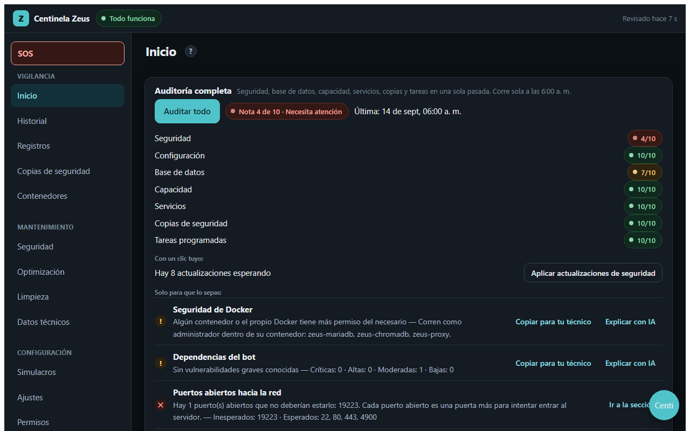
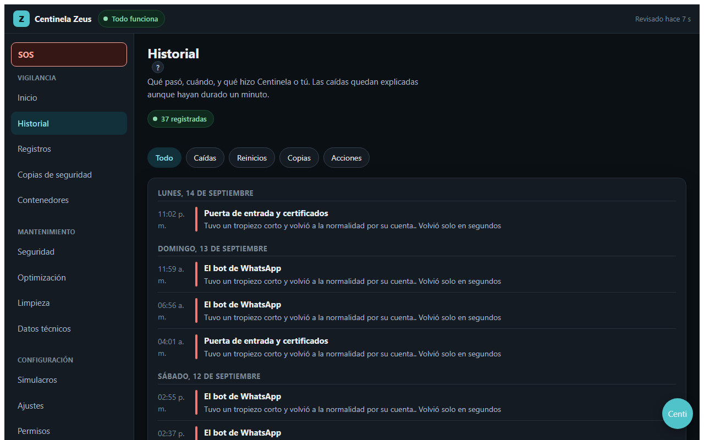
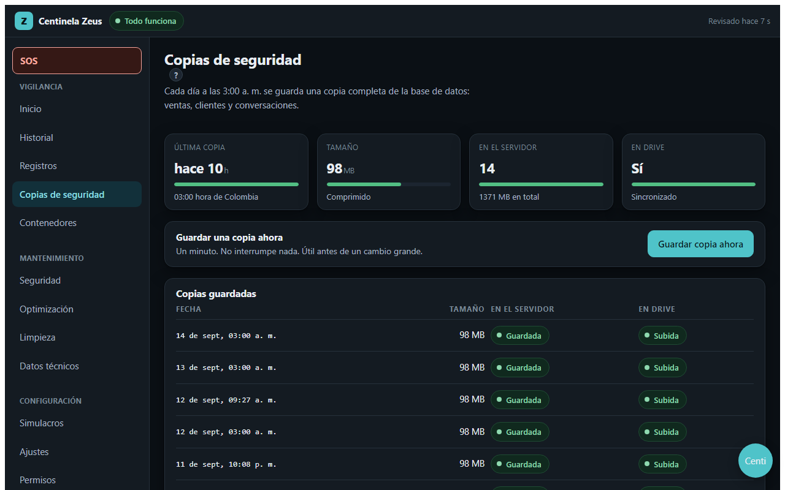
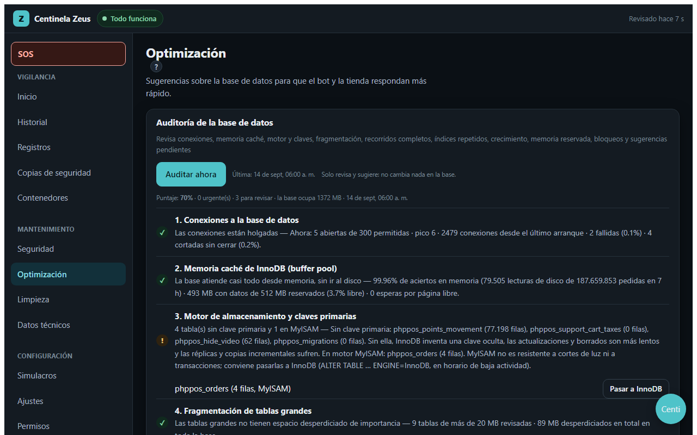
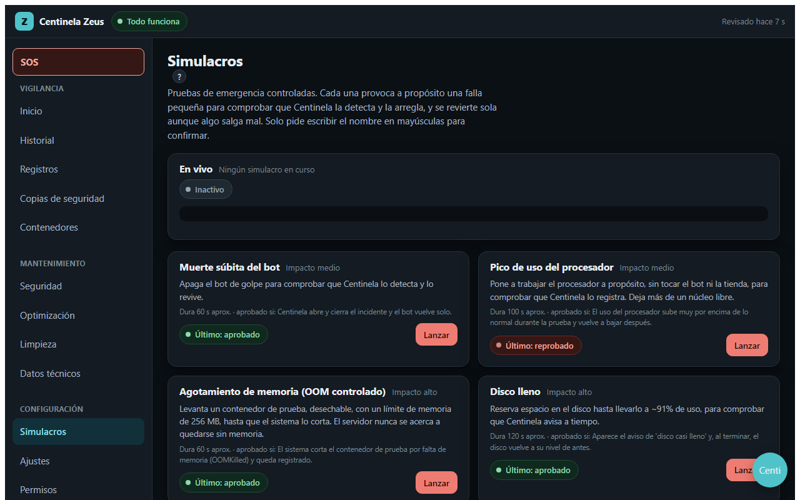
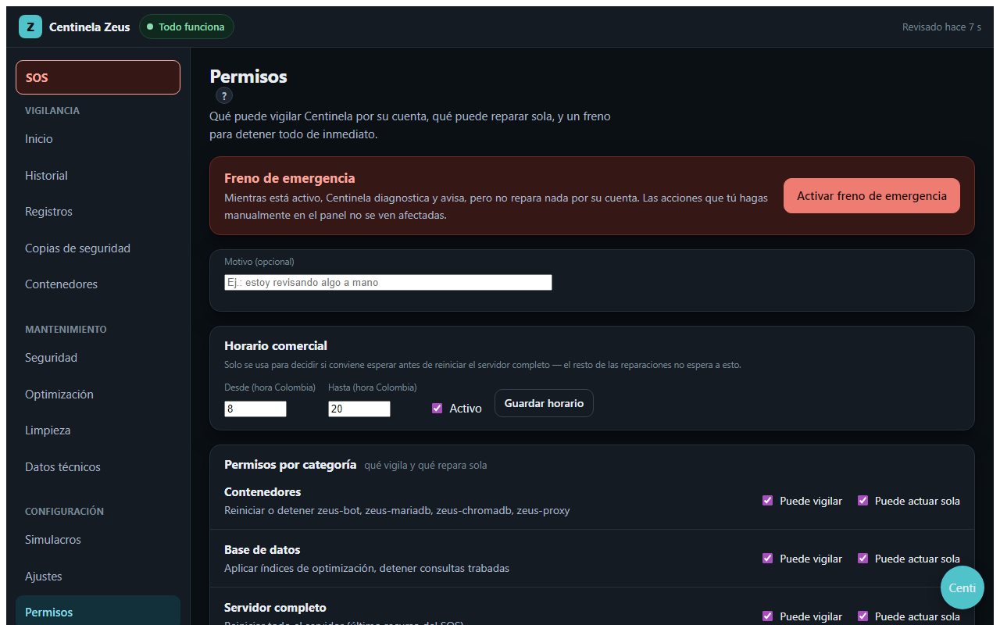
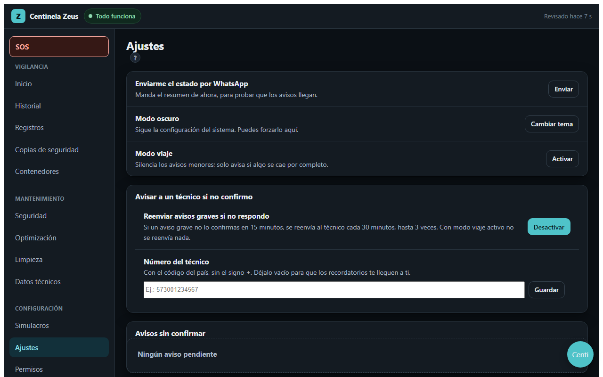

Centinela vigila tu servidor todos los días, repara lo que es seguro reparar, te pide una palabra escrita para lo que no, y te explica todo por WhatsApp y en un panel, en español claro. Esta página cuenta cómo funciona, sección por sección.
Un negocio pequeño pone su bot de WhatsApp, su tienda o su API en un servidor virtual (VPS) con Docker y nadie lo cuida. Un día el disco se llena, la base de datos se traba o un contenedor se cae de madrugada, y el dueño se entera porque los clientes dejan de recibir respuesta.
Centinela Zeus es un programa que se instala en ese servidor y hace, todos los días, lo que haría un ingeniero con experiencia: mira, diagnostica antes de tocar, guarda evidencia, repara de lo menos invasivo a lo más invasivo, verifica, y cuando no sabe, se detiene y avisa. Está escrito para un dueño que usa el celular y el computador con soltura pero no sabe Linux, y no tiene por qué saberlo.
Contenedores, base de datos, disco, memoria, CPU, copias de seguridad, certificado, puertos, tareas programadas, tendencias.
Libera espacio, reinicia el servicio que falla en orden de dependencia, deshace un despliegue malo, aplica arreglos de base de datos seguros.
Cada hallazgo dice qué significa, qué tan grave es de verdad y qué botón lo arregla. Si no hay botón, dice por qué y qué haría un técnico.
Un solo proceso Node 20, sin dependencias, corriendo en el host con systemd (fuera de Docker, para poder reiniciar contenedores sin morir con ellos). Sirve el panel, la API y los relojes, y compone los módulos de modulos/.
El panel: HTML y JavaScript sin frameworks. Trece secciones, consolas en vivo, confirmación por palabra escrita, diseño para celular.
El vigilante externo y el proxy de IA, en el plan gratuito de Cloudflare. Es lo único que sigue vivo cuando el servidor muere.
Los tres primeros pasos no arreglan nada a propósito: actuar antes de entender es lo que convierte una falla pequeña en una caída larga. El paso 9 se repite entre cada peldaño.








1. Toda acción que no se puede deshacer con un clic pide una palabra escrita (REINICIAR, ACTUALIZAR, APLICAR, ELIMINAR…). Una prueba automática falla si alguien agrega un botón de alto riesgo sin ella.
2. Nada que parezca un botón de arreglo miente. Si un hallazgo no tiene arreglo seguro de un clic, verás "Explicar con IA" o "Copiar para tu técnico", nunca un botón que lleve a una página sin solución.
3. Funciona igual en el celular. Menú de abajo, filas que se acomodan, sin desplazamiento horizontal.
/centinela menu — 19 opciones, ordenadas por lo que más falla
| # | Opción | Confirma |
|---|---|---|
| 1 | SOS: diagnosticar y reparar todo | |
| 2 | Estado del servidor ahora | |
| 3 | ¿El bot está mudo? | |
| 4 | Reiniciar el bot | sí |
| 5 | Consulta trabada en la base | |
| 6 | Fallas recientes | |
| 7 | Último despliegue | |
| 8 | Reiniciar la puerta de entrada | sí |
| 9 | ¿Hay un servicio en bucle? | |
| 10 | Conexiones a la base | |
| 11 | Copias de seguridad | |
| 12 | Hacer una copia ahora | sí |
| 13 | Certificado del sitio | |
| 14 | Liberar espacio en disco | sí |
| 15 | Memoria del bot | |
| 16 | Seguridad | |
| 17 | ¿Hubo una caída corta? | |
| 18 | Registros del bot | |
| 19 | Modo viaje | sí |
/centinela ¿por qué va lento el bot? La IA responde con el estado real del servidor como contexto (los mismos datos del panel), en español, sin jerga. Con tope diario de consultas.
Resumen diario a las 8 a. m., informe semanal los lunes, avisos de caída y de recuperación, avisos del vigía cuando una tendencia va a ser problema. Si no confirmas un aviso grave en 15 minutos, se reenvía al técnico que hayas configurado.
Silencia lo menor; solo avisa si algo se cae por completo.
SSH y acceso remoto · cortafuegos y bloqueo de intrusos · actualizaciones del sistema (botón Instalar) · usuarios con permiso de administrador · permisos de archivos con contraseñas (botón Corregir) · Docker · dependencias del bot · credenciales escritas en el código. Además, cada 5 minutos: certificado, puertos abiertos, intentos fallidos, cambios en la configuración de Traefik.
Conexiones · memoria caché de InnoDB · motor y claves primarias (Pasar a InnoDB) · fragmentación (Desfragmentar) · consultas que recorren tablas enteras · índices duplicados (Eliminar) · crecimiento · memoria reservada (Liberar memoria) · bloqueos · sugerencias de índice pendientes (Aplicar, con vuelta atrás). Una sugerencia sobre una vista o una columna que ya tiene índice no ofrece botón: te dice por qué.
Reglas deterministas sobre el historial: proyección de disco y memoria, picos de CPU y carga, reinicios repetidos. Cuando una dispara, la IA redacta el aviso. Respondes util o ruido y esa regla se vuelve más o menos sensible.
Aprende de cada corrida del SOS. Cuando se rinde, sugiere una guía paso a paso del problema parecido más reciente. Nunca la ejecuta sola.
Cada tarea programada (respaldo, mantenimiento, prueba de restauración, auditorías) manda una señal al terminar. Si un día falta, el panel y WhatsApp lo dicen.
Muerte súbita del bot, pico de CPU, agotamiento de memoria, disco lleno, aislamiento de red, congelar la base. Todos con vuelta atrás automática y un "hombre muerto" por si el servidor se reinicia a mitad.
Todo lo que corre dentro del servidor muere con él. Por eso hay una pieza pequeña en la red de Cloudflare, en el plan gratuito, que hace dos cosas imposibles desde adentro:
Cada minuto pide el /health del panel y una página del bot, y manda un webhook firmado e inocuo para detectar el caso más traicionero: el bot "vivo" pero colgado. Avisa solo tras 3 fallos seguidos, una sola vez por caída, y al recuperarse dice cuánto tiempo estuvo caído. Guarda estado en KV solo cuando algo cambia, así cabe en el plan gratuito.
La capa gratuita de Gemini rechaza llamadas desde IPs de proveedores de VPS. El Worker las reenvía desde la red de Cloudflare, con la llave real guardada como secreto solo ahí, y rota entre varias llaves si una se agota.
npm install -g wrangler cd cloudflare-worker wrangler kv namespace create VIGILANTE_KV # pega el id en wrangler.toml wrangler secret put PANEL_USUARIO # y cada secreto de la tabla del README wrangler deploy # pega la URL en VIGILANTE_URL del .env wrangler tail # logs en vivo
Explicación función por función en docs/CLOUDFLARE-WORKER.md.
| Hace solo | Hace solo, con límite duro | Nunca hace solo |
|---|---|---|
| Liberar espacio en disco (sin borrar datos del negocio) · reiniciar un servicio propio · reiniciar varios en orden | Reiniciar el servidor: 1 por día, 6 h de enfriamiento, se autobloquea · deshacer un despliegue: igual · reiniciar Docker: 2 por día | Tocar contenedores de otro proyecto · borrar datos, volúmenes o copias · matar una consulta de la base · cualquier cosa irreversible |
no logra diagnosticar (nunca reinicia "a ver si se arregla"), agotó su presupuesto (4 acciones o 10 minutos por corrida), la acción está bloqueada o en enfriamiento, el culpable es un contenedor ajeno, o tras reparar el servicio sigue sin atender.
Desde Permisos: un freno de emergencia (Centinela solo mira y avisa), un horario comercial (no reinicia el servidor completo en horas de atención si el bot sigue respondiendo de alguna forma) y permisos de lectura y escritura por cada una de 10 áreas.
sudo git clone https://github.com/facilposco/easy-server.git /opt/zeus-ops. Necesitas Node 20. No hay npm install..env.example a .env y llena dominio, contraseña de la base, nombre de la base, número de WhatsApp y llaves del proveedor.centinela-persona.md reemplaza [NombreDelNegocio].deploy/zeus-ops.service con systemd. Escucha solo en 127.0.0.1:4900.deploy/traefik-dynamic.example.yml.cloudflare-worker/, seis comandos. Pega la URL en el .env.deploy/crontab.example: respaldo, mantenimiento, prueba de restauración, limpieza./centinela menu · Simulacros → Muerte súbita del bot.Paso a paso con todos los comandos en docs/INSTALACION.md.
Centinela Zeus se publica con licencia MIT para que cualquier negocio pequeño tenga lo que antes solo tenían las empresas grandes. Si tienes un caso real de caída, una mejora, una traducción o un adaptador para otro proveedor de WhatsApp o de base de datos, lee CONTRIBUTING.md y abre un issue o un PR en github.com/facilposco/easy-server.
Las reglas del proyecto son pocas y firmes: sin dependencias externas, cada módulo recibe lo que necesita por parámetro, cada cambio trae su prueba, cada comando externo se valida con lista blanca, cada acción irreversible pide una palabra escrita, y nunca se suben secretos.